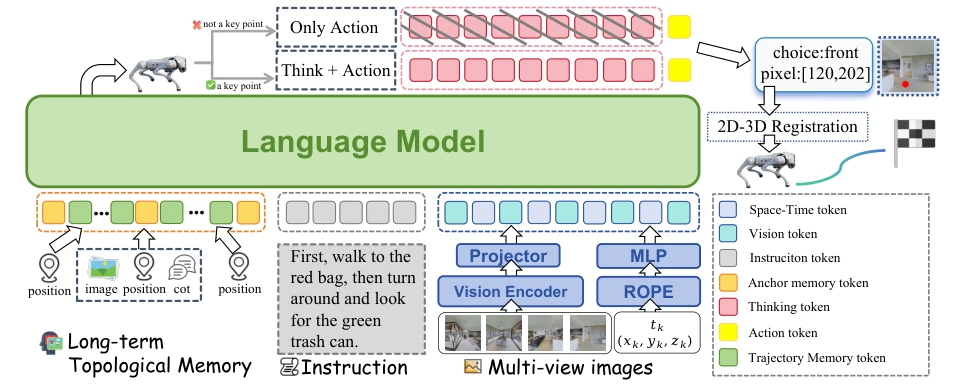
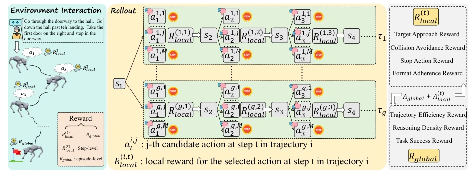
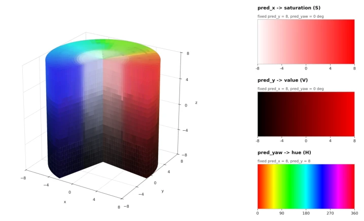
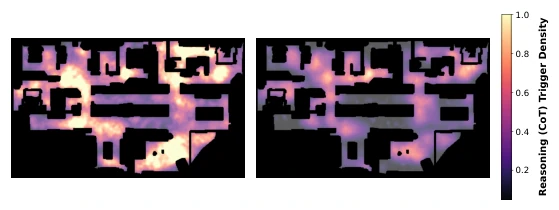
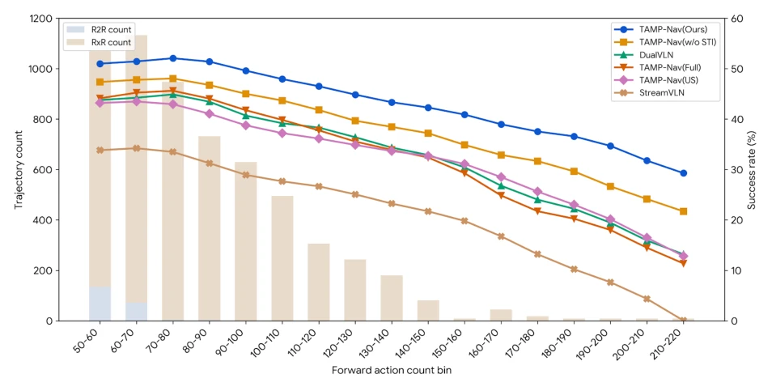
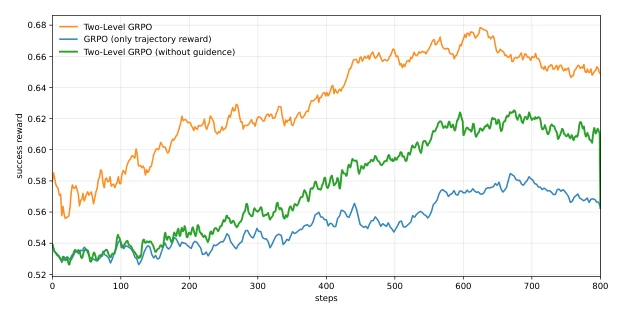
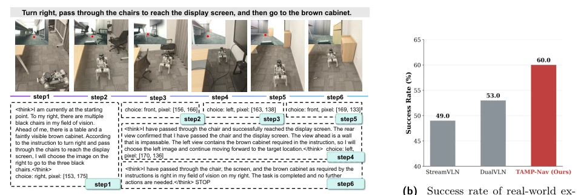
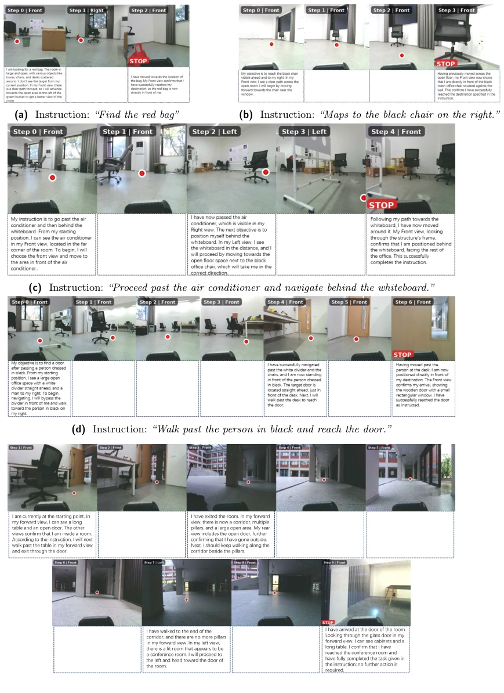
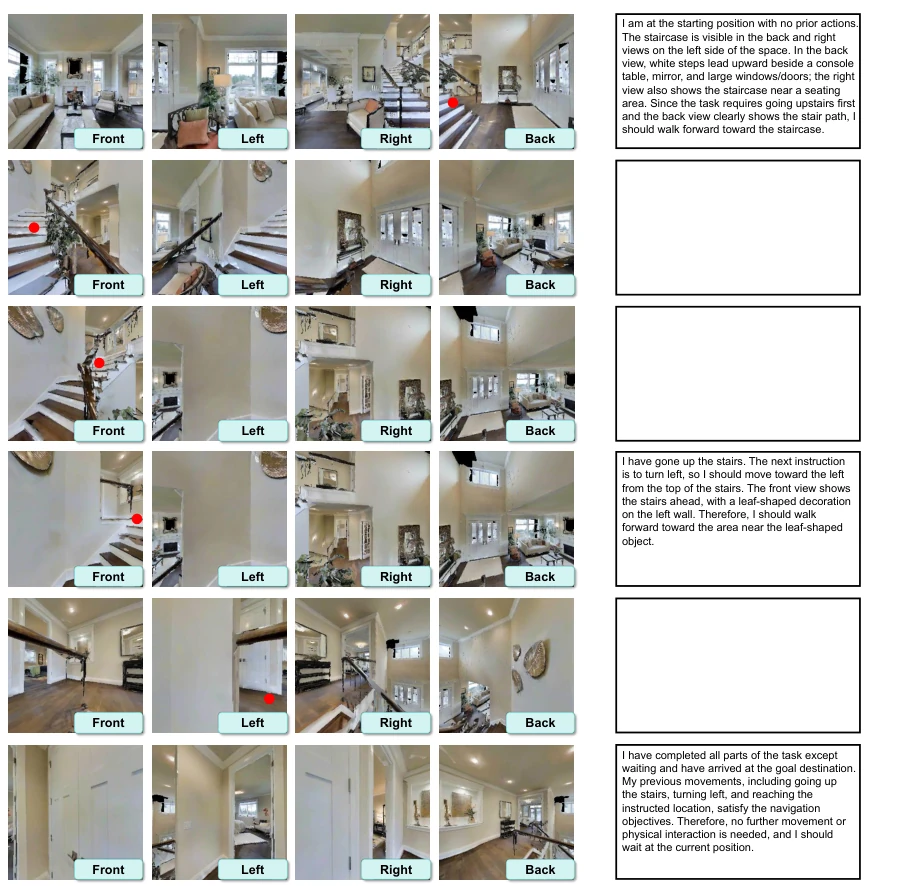

这篇 TAMP-Nav 论文给 VLM 导航搞了个“点穴”术，核心思路是别逼 VLM 直接算 3D 坐标，让它指个 2D 像素，剩下的交给 SLAM 去算。这招确实聪明，毕竟 VLM 是 2D 预训练的，硬让它学 3D 几何容易幻觉，Pixel-to-3D 巧妙避开了几何鸿沟。不过，这种“指哪打哪”的策略对深度图依赖太大，一旦深度不准，SLAM 就懵了，论文也承认了深度噪声会掉点。另外，虽然号称“按需思考”，但本质上还是靠 RL 去学什么时候该想，如果关键节点没被 CoT 覆盖，可能还是会迷路。Real-world 60% 的 SR 在零样本下算不错，但离真正落地还有距离。总的来说，这是一个在效率与性能之间找平衡的务实方案，但深度依赖和 SLAM 漂移依然是悬在头顶的达摩克利斯之剑，STI 令牌还缺高度信息，多楼层场景可能抓瞎。此外，CoT 生成依赖 Gemini 2.5 Flash 等强模型，若蒸馏到小模型可能效果打折，这也是个潜在隐患。
This TAMP-Nav paper implements a 'pointing' technique for VLM navigation. The core idea is not to force the VLM to calculate 3D coordinates directly, but to let it point to a 2D pixel, leaving the rest to be calculated by SLAM. This approach is indeed clever, given that VLMs are 2D pre-trained; forcing them to learn 3D geometry easily leads to hallucinations, and Pixel-to-3D cleverly avoids the geometric gap. However, this 'point where you aim' strategy relies too heavily on depth maps; once depth is inaccurate, SLAM becomes confused, and the paper admits depth noise causes performance drops. Additionally, although claiming 'think on demand,' it essentially relies on RL to learn when to think; if key nodes are not covered by CoT, it may still get lost. Real-world 60% SR is considered decent under zero-shot, but there is still a gap before true deployment. Overall, this is a pragmatic solution balancing efficiency and performance, but depth dependency and SLAM drift remain the Sword of Damocles hanging overhead; STI tokens lack height information, and multi-floor scenarios might be blind. Furthermore, CoT generation relies on strong models like Gemini 2.5 Flash; if distilled to small models, performance may degrade, which is also a potential hazard.
研究动机Motivation
具身导航中，VLM 的部署面临三大瓶颈。首先是几何鸿沟：VLM 预训练于 2D 图文对，直接映射到 3D 动作空间（如“左转 30 度”或回归 3D 坐标）会导致空间幻觉和低样本效率 (Zhang et al. (2025a); Stogiannidis et al. (2025))。其次是推理效率与性能的矛盾：现有方法通常每步或固定间隔触发 CoT，虽然提升了决策质量，但推理延迟严重，无法平衡运行时效率 (Lin et al. (2025); Song et al. (2023))。最后是长程记忆的信息丢失：全量存储导致上下文溢出，随意丢弃则丢失关键拓扑信息，且缺乏显式时空坐标组织历史 (Zhang et al. (2024b); Wei et al. (2025a))。这些问题导致现有模型在复杂环境中难以兼顾精度与速度，亟需一种能对齐 VLM 先验且高效利用记忆的架构。例如，DualVLN 虽然性能强但推理慢，而 StreamVLN 虽快但长程记忆能力弱，TAMP-Nav 试图解决这些 trade-off。现有方法如 CMA 和 GridMM 也面临类似的空间理解难题，难以适应连续环境。
In embodied navigation, VLM deployment faces three major bottlenecks. First is the geometric gap: VLMs are pre-trained on 2D image-text pairs; direct mapping to 3D action spaces (e.g., 'turn left 30 degrees' or regressing 3D coordinates) leads to spatial hallucinations and low sample efficiency (Zhang et al. (2025a); Stogiannidis et al. (2025)). Second is the contradiction between inference efficiency and performance: existing methods typically trigger CoT every step or at fixed intervals; although decision quality improves, inference latency is severe, failing to balance runtime efficiency (Lin et al. (2025); Song et al. (2023)). Finally is information loss in long-term memory: full storage leads to context overflow, arbitrary discarding loses key topological information, and lacks explicit spatiotemporal coordinates to organize history (Zhang et al. (2024b); Wei et al. (2025a)). These issues cause existing models to struggle to balance accuracy and speed in complex environments, urgently requiring an architecture that aligns with VLM priors and utilizes memory efficiently. For example, DualVLN has strong performance but slow inference, while StreamVLN is fast but has weak long-term memory capabilities; TAMP-Nav attempts to resolve these trade-offs. Existing methods like CMA and GridMM also face similar spatial understanding challenges and struggle to adapt to continuous environments.
The TAMP-Nav framework comprises three core modules. First is Pixel-to-3D Action Formulation (Point): the agent acts as a 'pointer,' VLM outputs 2D pixel coordinates, projected to 3D points via depth maps, then executed by a low-level SLAM controller. This decouples high-level visual prompts from low-level geometric execution, leveraging VLM's 2D priors. Second is Selective Reasoning and Anchor-Trajectory Memory (Think & Memorize): through spatiotemporal key node mining, CoT is triggered only at topological key nodes and stored as explicit anchors (containing vision, state, spatiotemporal coordinates); non-critical paths are compressed into lightweight Space-Time Indicators (STI) tokens; STI uses RoPE to encode spatiotemporal information, including sin/cos encoding for yaw to prevent discontinuities. Third is Two-Level GRPO Paradigm (Align): adopts dual-level reward optimization, superimposing global trajectory rewards (success, efficiency, density) and local step rewards (proximity to target, obstacle avoidance, format). Through Group Relative Policy Optimization, combined with annealed guided sampling, it guides high-quality trajectory sampling in early RL stages, achieving alignment between cognitive planning and physical feedback. The entire process is Vision Input -> Memory Retrieval -> On-demand Reasoning -> Pixel Output -> 3D Projection -> Execution. This method significantly reduces computational overhead through sparse inference and compact memory.

Figure 1 The architecture of TAMP-Nav. Given visual-textual inputs, the agent compresses long-horizon history into an Anchor-Trajectory Memory, autonomously triggering reasoning at critical nodes. As a visual pointer, it selects the optimal multi-camera view and predicts a 2D pixel, which is projected into 3D for SLAM execution. Finally, the policy is optimized via Two-Level GRPO.

Figure 2 The Two-Level GRPO paradigm. TAMP-Nav superimposes trajectory-level rollouts (competing for global navigation success) with step-level candidate rollouts (exploring diverse 2D visual-spatial actions via VLM temperature sampling).

Figure 8 Visualization of STI token. We employ a clustering algorithm (McInnes et al. (2018)) to map high-dimensional embeddings into a 3D space.
Experiments are conducted on R2R-CE and RxR-CE benchmarks, using a self-built MultiNav-CoT dataset (90k trajectories). Baselines include DualVLN, StreamVLN, NavFoM, etc. Main metrics include SR, SPL, NE, etc. TAMP-Nav achieves 66.2% SR on R2R-CE Val-Unseen, outperforming DualVLN (64.3%) and StreamVLN (56.9%). Inference efficiency is significantly improved, with single task time of 16.58s, far faster than DualVLN (41.46s). Long-term task performance is robust, with smaller SR decline under long trajectories. Ablation studies prove Pixel-to-3D action space, AT-Mem memory mechanism, and Two-Level GRPO are all effective. For example, SR drops 4.2 points after removing STI. Real-world deployment achieves 60.0% SR in 5 task categories, verifying zero-shot transfer capability. However, depth noise tests show SR declines with increasing noise, indicating sensitivity to depth information. Additionally, CoT trigger density drops from 100% to 26.3% while maintaining high performance, proving the effectiveness of on-demand reasoning.

Figure 3 Spatial Heatmap of Reasoning (CoT) Triggers. Comparison between the SFT model (left) and the RL-aligned TAMP-Nav (right).

Figure 4 Performance distribution on long-horizon navigation tasks. The bars show the trajectory count in each length bin, and the curves show the Success Rate (SR) of the evaluated methods as trajectory length increases.

Figure 5 Learning curves of success rewards under different GRPO configurations. The plot illustrates the training progress over 800 steps for three variants: the full Two-Level GRPO, the version without annealed guided sampling (“without guidance”), and the standard GRPO using only trajectory-level rewards (“only trajectory reward”).

Figure 6 Real-world deployment results. (a) Visualization of the execution trajectory. (b) Success rate comparison.

Figure 7 Examples of real-world experiments. The agent demonstrates zero-shot transferability across physical environments, executing multi-turn instructions by reasoning and outputting sequential 2D pixel coordinates.

Figure 9 Visualization of a simulated navigation trajectory. The agent successfully executes the complex instruction: “Go up the stairs and turn left. Wait at the doorway to the bedroom straight ahead.” by triggering selective reasoning at key decision points and outputting point-and-click actions.